This post documents our 12 day cruise on Oceania Allura, which took us to some incredible islands, starting with the ABC islands in the Dutch Caribbean. First up was Oranjestad, Aruba, known for its stunning white-sand beaches, followed by Willemstad, Curacao, which has those beautiful, colorful Dutch colonial buildings lining the harbor. Next, we visited Kralendijk, Bonaire, which is a paradise for snorkeling and scuba diving. After the Dutch islands, we head to a few of the more lush, volcanic islands. We stopped at St. George’s, Grenada, which is famous for its spices and called the Spice Isle. Then it was Castries, St. Lucia, known for the peaks of the Pitons rising out of the sea. The itinerary also included a visit to Gustavia, St. Barts. Our last island stop was Tortola in the British Virgin Islands.
On previous trips I’ve sent out a daily email. On this trip, I did something different - I posted trip reports to Blogger. I was able to write and post something every day. I didn’t bring my laptop, but instead I used my phone to write my emails; either using my finger to peck at the screen or using voice typing (speech-to-text conversion). First, I recorded some notes about the day’s activities. After doing some basic editing and making corrections, I used Google Gemini to clean up the text to improve the flow and readability. Before leaving on this trip I did some testing of this procedure using trip notes from our previous cruise. The results required a bit of cleanup, but overall acceptable and much faster than pecking at the screen with my finger.
After returning home, I took the emails and Blogger posts, added additional photos and made corrections to create this document.
Fri, Nov 14 - Travel day
Our flight from LAX to MIA was scheduled for a 6am departure, which required a very early start. Because recent news reports have highlighted issues with long lines, delays, and cancellations at airports nationwide, we decided to leave home much earlier than usual to ensure we had extra time, especially for any unexpected queues at the TSA security checkpoints.
We left home at 1:12am. Despite a light rain overnight leaving the roads wet, traffic on Highway 101 toward the Flyaway bus terminal in Van Nuys was light and flowing fast.
We arrived at the Van Nuys Flyaway at 2:04am. I had a 2am parking reservation and, after dropping Becky off at the curb, I parked the car on the second floor, not far from the elevator. There were a few open spaces scattered around.
At the bus terminal, we found about 25 people waiting, many of whom appeared to be airport workers. I had incorrectly assumed the next bus was at 2:30am; after checking the schedule, I learned the next scheduled departure was actually at 3am. However, we were able to board early at 2:50am.
The bus arrived at LAX Terminal 1 around 3:30am and we reached Terminal 4 at 3:45am.
The American Airlines bag check counter didn’t open until 3:50am. After checking our two bags, we proceeded directly to the TSA security checkpoint. Fortunately, the TSA PreCheck line was completely clear.
We arrived at our gate at 4:07am, giving us a little over an hour to wait before boarding.
It was still dark outside as we boarded the plane. Since we are seated in row 2, we were in the second boarding group, right after families with young children and those needing extra time or assistance. As I post this, we are on the plane, still at the gate, waiting for the remaining passengers to board and for the doors to close.
The flight to Miami is scheduled to take 4 hours and 47 minutes, with an estimated arrival time of 2:00 PM local time. The weather in Miami is expected to be 79°F and partly cloudy.
For the flight, Becky plans to watch a movie. The in-flight entertainment is streamed to personal devices, and since I don’t enjoy watching movies on my small phone screen, I decided to pass. Instead, I’ll be reading on my Kindle or listening to audiobooks. I checked out a couple of audiobooks from the library before leaving, and the 21-day loan period means I’ll have the whole trip to finish one. I’ll listen to a few minutes of the first chapter of each until I find one I like best.
The cabin door closed at 5:58am and by 6:20am we were rolling down the runway for takeoff. We hit a patch of turbulence shortly after reaching cruising altitude, but thankfully, the remainder of the flight was very smooth. I was pretty tired and ended up falling asleep while reading my book.
For breakfast, we both chose the three-cheese omelet with potato wedges. Unfortunately, the meal was marginal - it reminded me of a cheap frozen breakfast from the grocery store. The silver lining was the coffee, which I enjoyed with Baileys.
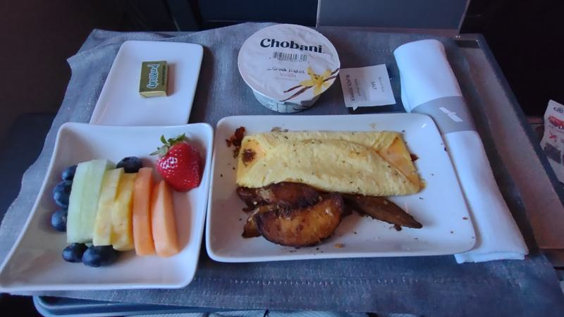
After collecting our bags, we went outside to wait for the hotel shuttle. We must have just missed it, and because the shuttle only runs once an hour, we ended up waiting almost an hour. Next time, I think I’ll just call an Uber. We finally arrived at the hotel and were waiting in the check-in line by around 3:50pm.
After unpacking, we took a ten-minute walk to a nearby Target to pick up some snacks. On the way back, we stopped at a small Mexican restaurant called Taqueria Los Potrillos Miami. We ordered some food to take back to the room; I had the carnitas burrito, and Becky had the chicken burrito. They were both really good.
It was a long day, so we turned in early.
Sat, Nov 15 - Layover Day
We arrived in Miami two days ahead of our cruise, giving us a one-day buffer against any potential travel disruptions before embarkation. Today was that layover day.
I got up a little after six, after hitting the snooze button once on my alarm. After showering, I headed down to the lobby for a cup of coffee to bring back to the room. Becky got up a bit later.
Once we were both ready, we went down for the complimentary hotel breakfast. It was crowded in the lobby and there were people waiting around with their luggage. We think they were waiting for cruise ship transfers to the port or they had a very early flight arrival and we’re waiting for the 3pm hotel check in time.
The breakfast fare included scrambled eggs, waffles, oatmeal, and ham and egg croissant sandwiches. We both grabbed a croissant sandwich and some scrambled eggs, along with more coffee to take upstairs. Unfortunately, the scrambled eggs were cold, and the croissant bread was dry, but otherwise, it was a typical free hotel breakfast.
The hotel only services rooms on Mondays, Wednesdays and Fridays, so we just asked the front desk to bring us a fresh set of towels.
Today was mostly sunny with a temperature of 80F. We took a pleasant ten-minute walk from the hotel to the nearby Target. This store was noticeably nicer and larger than the ones near our home.
In the same shopping center, we discovered a store called Government Discount, an outlet open to the public that sells brand-name goods - like perfumes, home decor, and health and beauty products - at steep discounts. Becky found a few things to buy.
We picked up takeout for an early dinner at a nearby restaurant called the Latin Cafe. I had the Miami sandwich - Cuban Bread, Turkey Breast, Bolo Ham, Lettuce,Tomato, Swiss Cheese, Bacon & Mayo. And Becky had a Cubano - Cuban Bread, Bolo Ham, shredded Pork, Swiss Cheese minus the Pickles. Both sandwiches were pressed. While they were good, the burritos we had yesterday were definitely better.
We spent the evening relaxing with a cup of decaf coffee and a chocolate muffin (saved from breakfast) and playing card games: gin, rummy and kings on the corner. Becky won most of the hands.
Finally we did some packing and organizing for tomorrow’s departure. We affixed the ship’s luggage tags to our check-in bags and discussed our morning departure time for the cruise port.
Sun, Nov 16 - Embarkation, Miami
I woke up at 6am. After a shower, I went downstairs to the lobby to grab a cup of coffee and some yogurt to bring back for breakfast in the room. Becky had coffee and a muffin. We then packed our suitcases and were finished by 9am. Since we still had time to kill, we listened to an audiobook while waiting.
A little after 10am, we gathered all our belongings, did a final room check, and went downstairs to check out of the hotel.
Our cruise boarding pass indicated a noon boarding time, but since we had priority embarkation, we thought we could head to the terminal whenever we were ready. We decided 11am would be a good time to aim for, as we didn’t want to arrive too early and risk waiting outside if the terminal doors weren’t yet open.
Using the app on my phone, I arranged for Lyft to take us to the cruise terminal. The driver arrived about five minutes later, picking us up around 10:20am. Traffic to the port was light, but there was a lot of road construction. The freeway was closed, forcing us to take surface streets through the downtown area.
We arrived at the terminal around 10:45am and we were dropped off curbside. The stevedores were immediately available to take our two checked bags. At the terminal door, we had to show our passports and boarding passes before being allowed to proceed upstairs to the security checkpoint and waiting area.
Our boarding passes were checked again, and we were directed to the seating area. The room was crowded, and with no empty seats, we just stood around. About five minutes later, they began boarding wheelchairs. As soon as the wheelchairs were through, people started rushing the line. We had to push our way forward since they were only allowing owners suites and President’s Circle guests to approach the counter for key cards.
By 11:10am, we were on the ship. We like to be onboard in time for lunch.
The first thing we did was go to the restaurant reservation desk to inquire about specialty dining availability. There were open spots, and we chose the Polo Grill, the Steak House. We secured a 6:30pm reservation for two at a non-sharing table.
Next, we went to our muster station to check in. While there, Randy, a passenger we’ve met on two previous Oceania cruises, approached to say hello. We were surprised to see him, as we never expected him to be on this cruise. Later in the cruise we joined his trivia team.
We had a short wait before our rooms would be ready, so we went up to Wave’s Grill for lunch. I had the Surf & Turf Wagyu Burger, which had pieces of lobster on the burger. I took the lobster off to eat separately. The hamburger was good, but a little on the small side. Becky ate most of my fries. Becky had the baby shrimp cocktail salad with lobster on the side. She liked the lobster but didn’t care too much for the shrimp salad since it had too much mayo dressing on it.
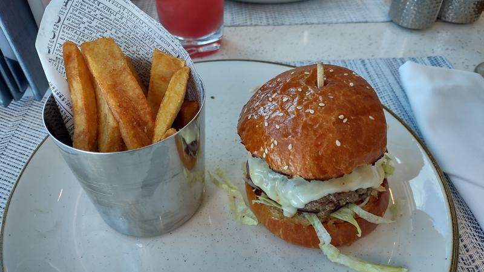
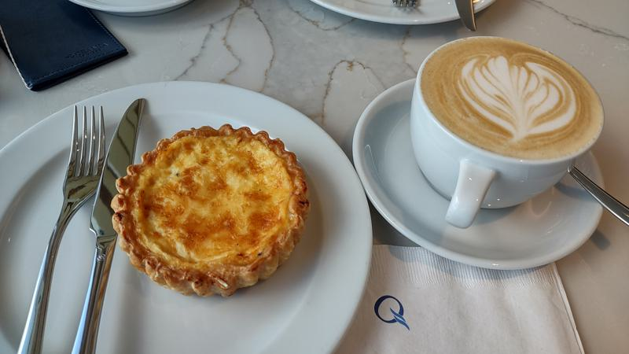
At 11:30am an announcement was made over the PA system that the Owner’s, Vista, and Oceania suites were ready. We knew our rooms would be the next group to be called.
After lunch, we went to the Barista’s coffee shop. I had a cappuccino and a small bacon and cheese quiche, while Becky had a latte with Bailey’s and a vanilla eclair. While we were relaxing, an announcement was made that our cabins were finally ready, around 1pm. We immediately made our way to the room.
Our luggage was waiting in the hallway. Unpacking on the first day is a little like a game of Tetris; we had to find spots for our clothes. The drawers often aren’t deep or large enough for a lot of items, and some are too small to hold my packing cubes. I usually just leave my clothes in the packing cubes, which makes the whole process much easier.
Once most of our belongings were put away and our empty suitcases were stored under the bed or in the closet, we went out to explore the ship.
At 5pm we went to Martini’s Bar for a pre-dinner cocktail. I ordered a drink called Sir Connery. It was an interesting, though slightly sweet and dessert-like drink, and probably not one I’d get again. Becky ordered a French Martini, which she liked.
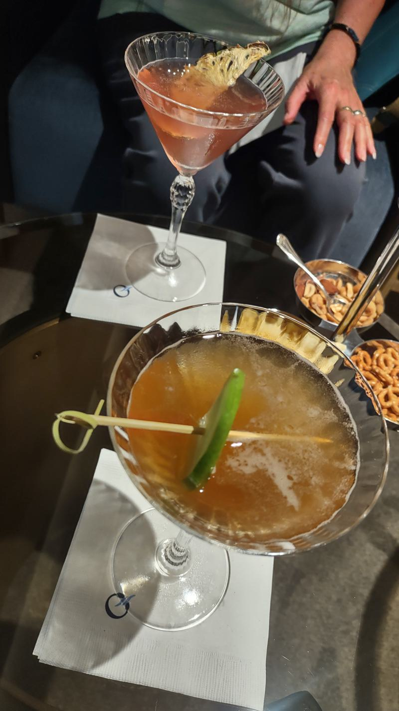
Then we headed to the Founders Bar for a second cocktail. We sat at the bar, which was a very interesting experience - it was fun to watch the bartenders create all sorts of unique and smokey drinks. I ordered The Lone Star, which was a bit too sweet for me. Becky had a drink called the Not So Sure, which she liked, but would not get again.
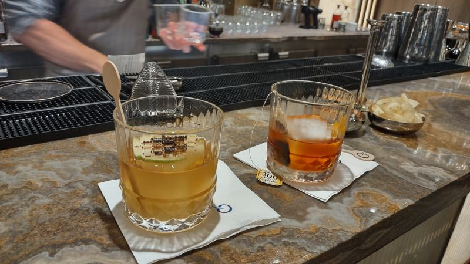
Dinner tonight was at the Polo Grill. I had the Filet Mignon, and Becky enjoyed the Grilled Rack of Lamb.
Oceania Allura
The Allura is the second ship in the new Allura class (following the Vista), launched in 2025. The Allura is 791 feet long and weighs 68,000 tons. The Allura has a passenger capacity of 1,200 guests who are served by 800 crew members.
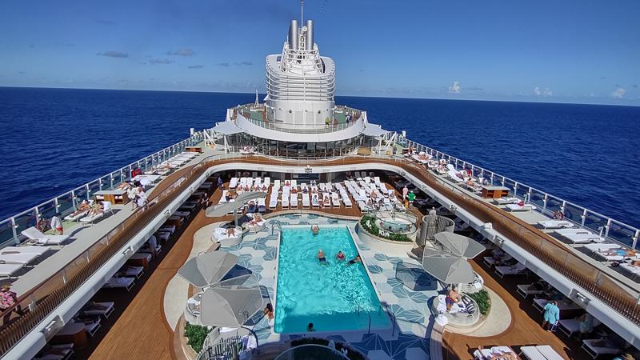
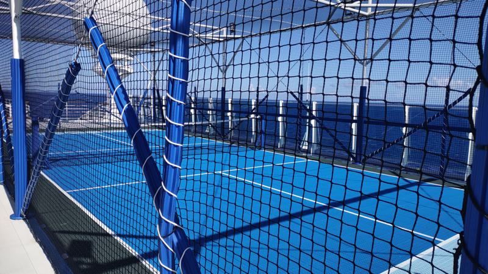
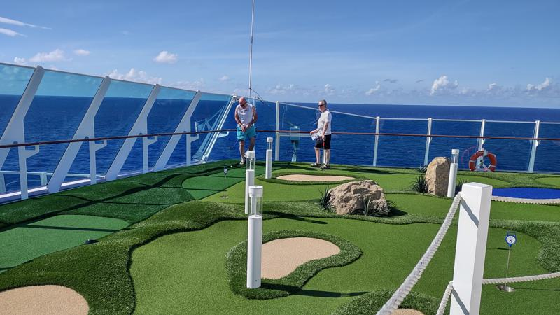
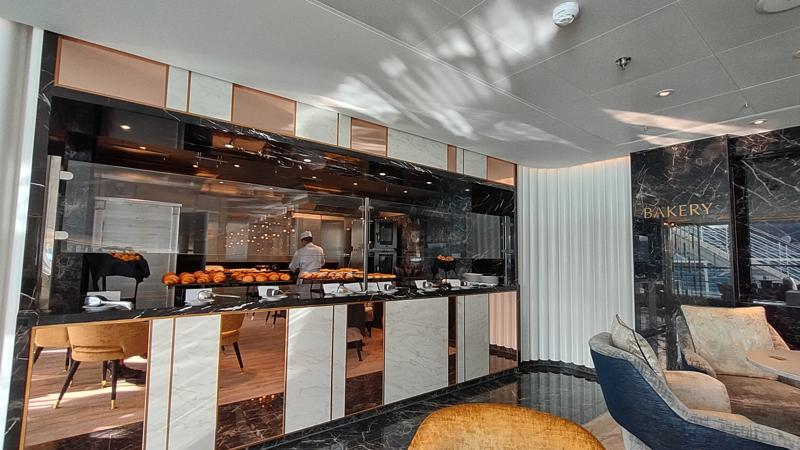
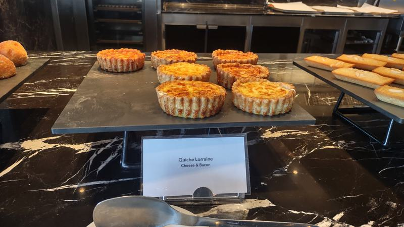
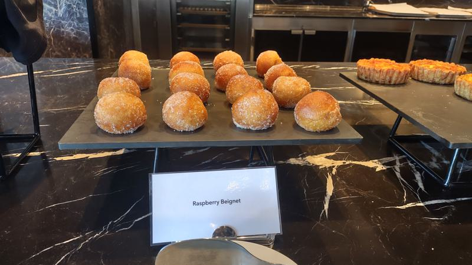
On this cruise we are in a Penthouse Suite. The room includes:
- Access to a private Executive Lounge, with Concierge and features complimentary sodas, coffees and snacks throughout the day.
- Access to the Spa Terrace.
- In suite dining from any of the specialty restaurants, Grand Dining Room or Waves Pizza.
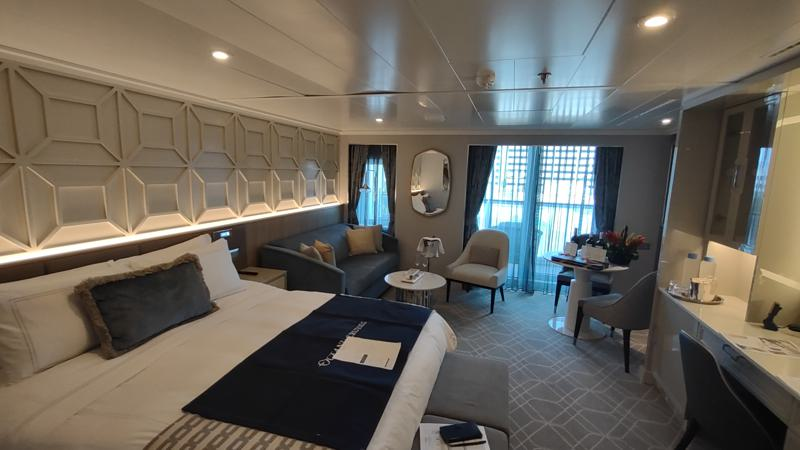
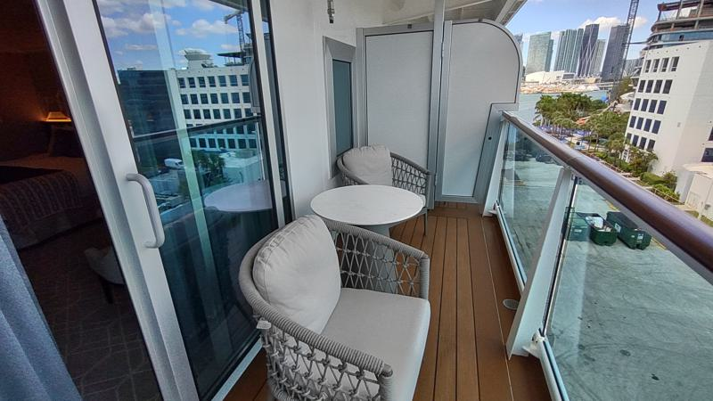
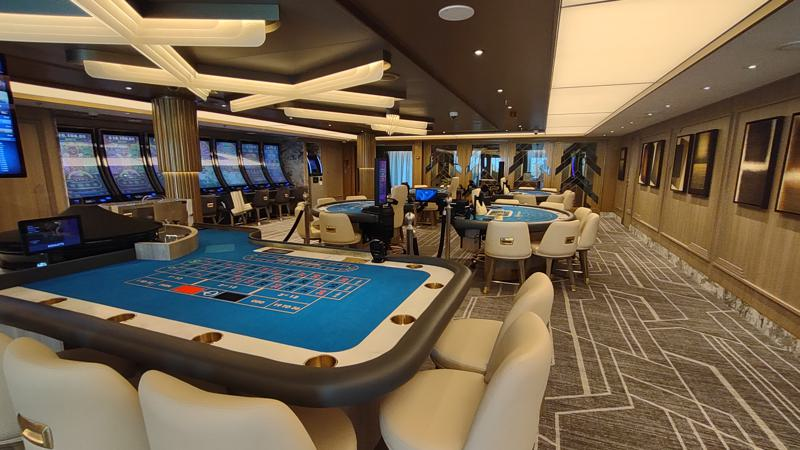
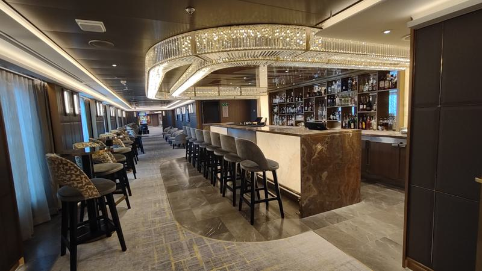
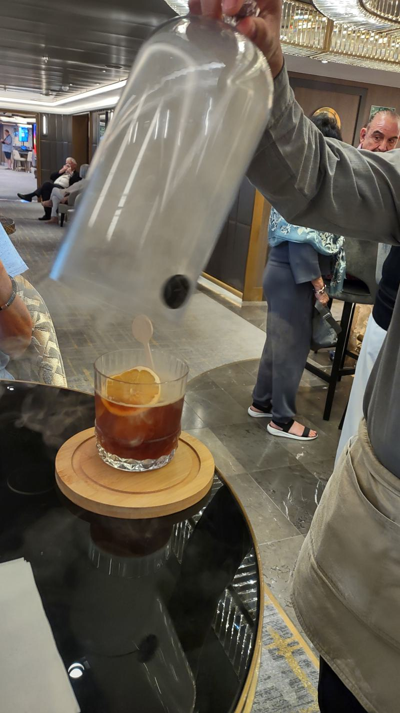
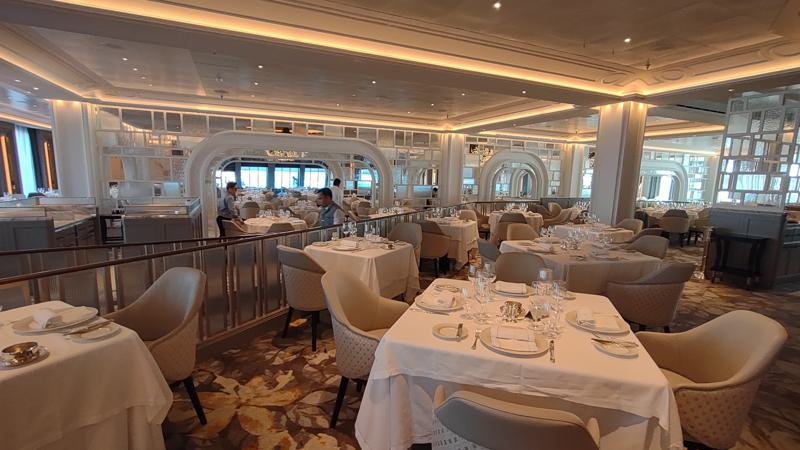

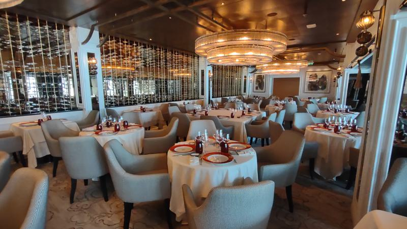
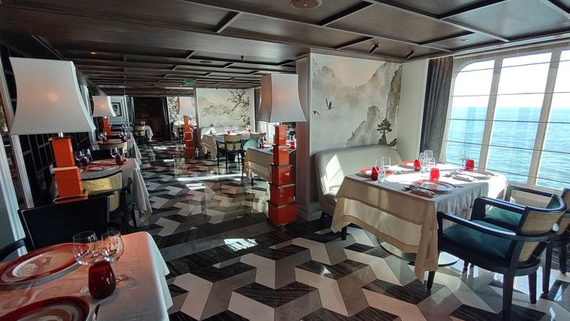
Jacques is the signature French restaurant on the Oceania Allura.
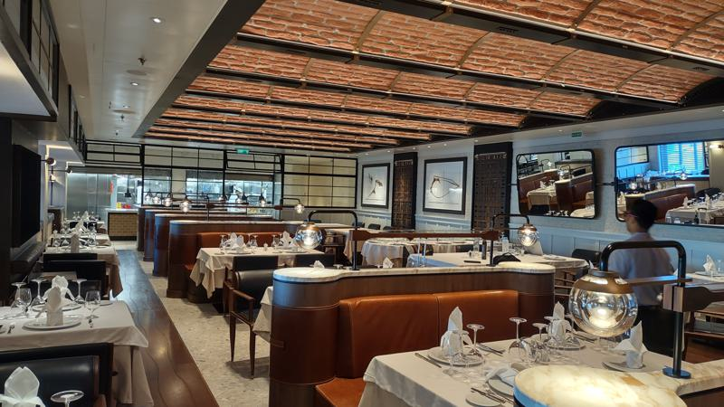
The culinary experience on Oceania’s Allura extends far beyond its twelve dining venues, centering on the innovative Culinary Center, a state-of-the-art teaching kitchen at sea. The curriculum focuses on regional recipes, advanced techniques, and flavor profiles often inspired directly by the destinations the ship visits, ensuring the educational experience is fully integrated with the voyage itself.
Classes are reserved prior to the cruise and usually fill up in advance. Sometimes there are openings on the first day of the cruise and during the cruise there is usually a standby line before each class. The cost of the class is $129 per person. We didn’t attend any of the cooking classes on this cruise, but we will consider taking a class on a future cruise.
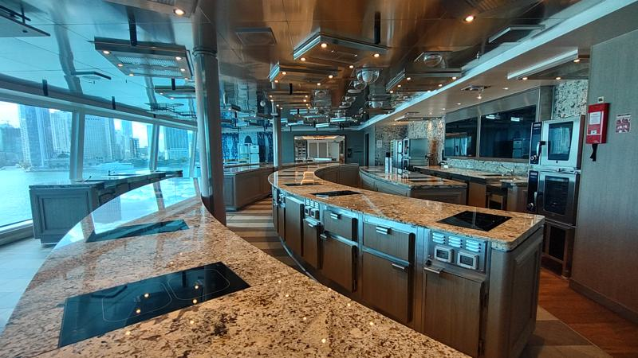
The Artist Loft on the Allura serves as the ship’s dedicated creative center, designed to be an inspiring haven for passengers to explore their artistic side while at sea. Under the guidance of a talented Artist in Residence, guests can participate in hands-on, step-by-step instruction. The classes are available by sign up sheets on the first day and they are free.
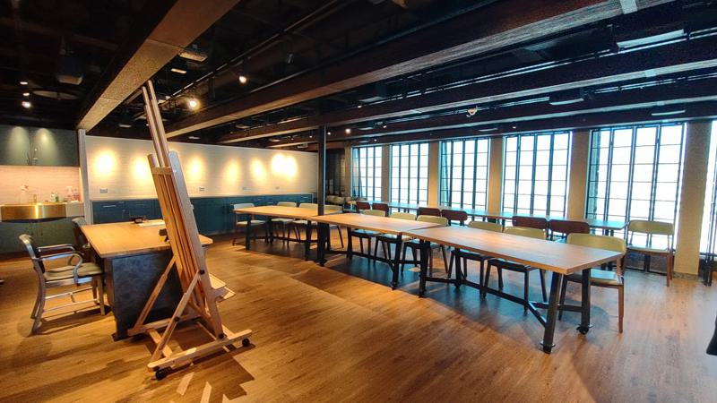
There are a few clothing items in the gift shop that we have purchased using our Shipboard Credit, like t-shirts and a jacket. Most of the other items for sale are high end luxury items like expensive watches, jewelry and designer purses. The gift shops on NCL and Holland have more everyday items, whereas Oceania’s gift shops are more like shopping on Rodeo Drive (I would imagine). Something I found very strange is the gift shop was selling pre-owned items such as purses and Rolex’s.
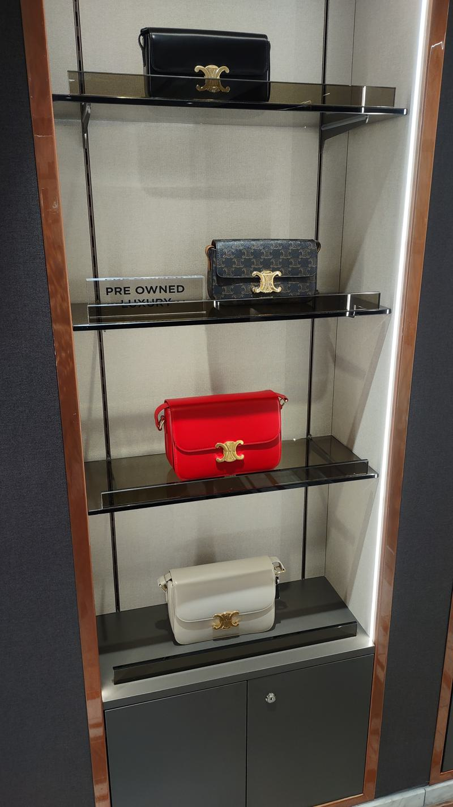
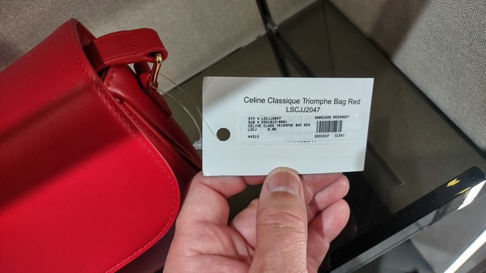
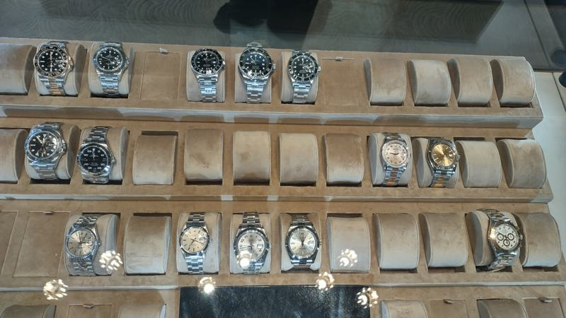
Status Match and Benefits
Oceania has one of the best loyalty programs amongst all of the cruise lines. The more you cruise with them, the better the benefits get. This is our fourth Oceania cruise; the nice benefits start after about 10 cruises.
We had heard rumors that Oceania’s parent company, NCL Holdings, would begin status matching across their three brands. This finally happened on September 29, 2025, with the first eligible sailings starting on October 15, 2025. The program allows members of the company’s three brands: Norwegian Cruise Line, Oceania Cruises and Regent Seven Seas Cruises, to have their loyalty status honored across the other brands.
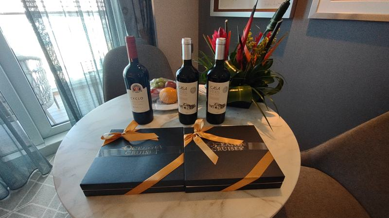
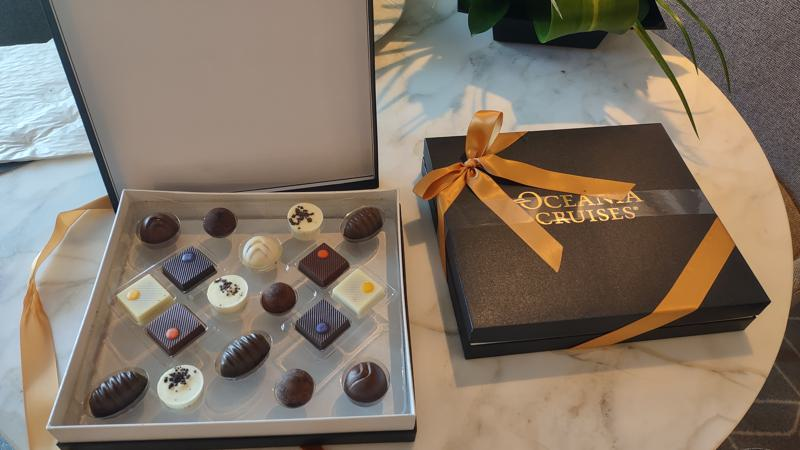
As NCL Ambassadors, we status match to Oceania President’s Circle level. At this level, the benefits are pretty generous. For example, we get:
- Prestige Select beverage package
- Two Complimentary Custom Air Fee Waivers (Total Value $398)
- General Manager’s VIP List
- Complimentary Laundry Service
- Shipboard Credit (Per Stateroom) of $1,250
- Complimentary Wine Tasting
- Priority Terminal Check-In
- Invitation to Special Dinner with Officers
- Complimentary bottle of Oceania Club private label wine
- 10% onboard savings on Oceania Cruises logo merchandise
- Two Complimentary Aquamar Spa Treatment Credits (each up to) $200
- 10% onboard savings on Oceania Cruises logo merchandise
Many of these benefits we don’t take advantage of. The shipboard credit of $1,250 combined with other promotional credits, means that we have about $2,000 of non-refundable onboard credit to spend on this cruise. Given that basic WiFi (which is unlimited, whereas NCL’s basic WiFi is only 150 minutes per cruise), the Prestige Select beverage package and gratuities are included - spending about $2,000 on the ship is a little challenging. Shore excursions and gift shop purchases is where we will be spending most of the credit.
Becky has been taking advantage of the free, unlimited laundry. So far on this cruise, the laundry has come back within 24 hours. The shirts are all on hangars and everything else is nicely folded. On previous Oceania cruises we received three included laundry services and the laundry was returned usually within three days and not as neatly folded or on hangers.
At time of booking we selected the House Select Beverage Package promotion which includes a selection of wines, champagnes and beers that can be enjoyed during lunch and dinner at onboard restaurants. These are only available during lunch and dinner meal times. Generally 1130am to 2pm and 630pm to 930pm. The status match gave us the Prestige Select Beverage Package making the House Select Beverage Package redundant and meant that cocktails and other beverages were free.
Oceania’s current promotion is called, “Your World Included”. All specialty dining, gratuities and unlimited WiFi is included. Also, you get a choice between the House Select Beverage Package or $800 in shore excursion credit. Given that the status match includes the Prestige Select package, a better choice would be to take the shore excursion credit.
The specialty restaurants, meals in the Grand Dining Room and the Terrace Cafe (buffet) are in general a bit elevated compared to NCL and Holland. However, unless you have priority restaurant booking that comes with Penthouse cabins and above, you will most likely be dining at a sharing table in the specialty restaurants.
Prior to the cruise, I sent an email to Oceania requesting status matching for this cruise. Oceania will status match on request and per cruise. About 12 days prior to sailing I received an email stating that we had received the status match. I reprinted our boarding passes which now reflected the new status and needed for priority boarding. When we received our key cards, the House Select Beverage Package code was printed on our cards.
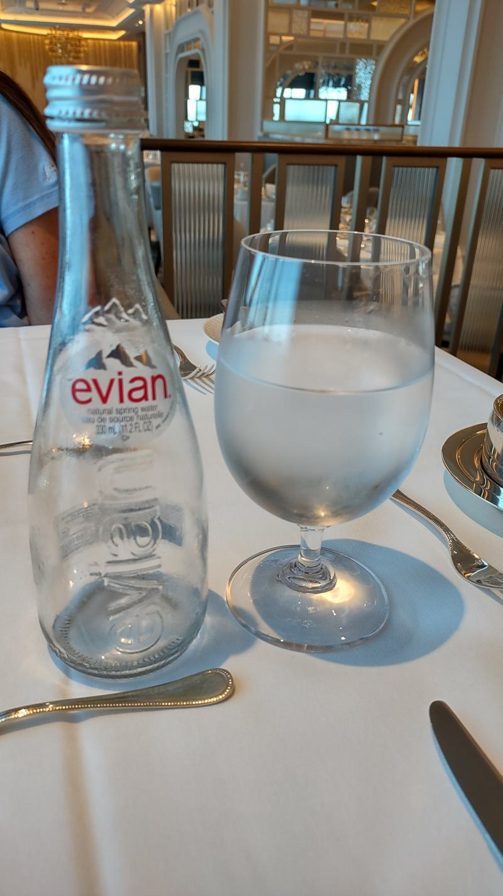
Mon, Nov 17 - At Sea
A restless night had both of us up early, around 4am.
After getting up and taking a shower, I headed to the Horizon observation lounge. I used the automatic machine to make a cup of coffee; it was decent, though not the best I’ve had from that type of brewer. The lounge was completely empty, so I had the tranquil space to myself. I worked on my trip report while enjoying the solitude and waiting for sunrise. Since no one was around I didn’t feel awkward about doing voice typing on my phone.
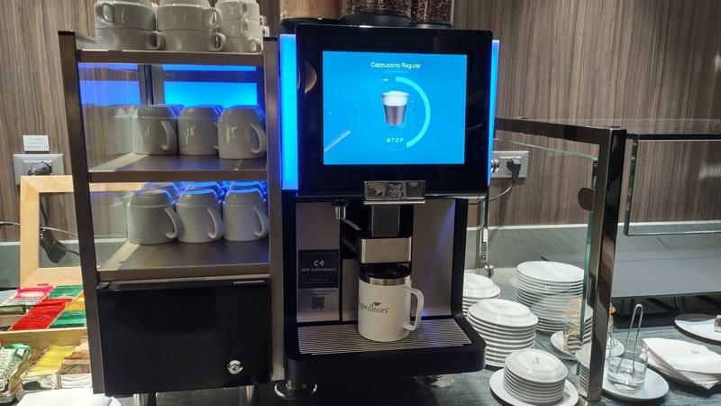
The weather has been beautiful.
We had breakfast in the Grand Dining Room. I ordered Eggs Benedict, while Becky enjoyed an omelet paired with lamb chops.
The morning was dedicated to friendly competition. We played miniature golf for O-points, and then followed it up with a game of Bago for more O-points. We also continued working on the Art Scavenger Hunt, which seems more challenging on this cruise compared to previous ones.
Since the gift shops were open, we stopped in to browse. The clothing selection was poor, mostly featuring high-end items like purses over $500, expensive watches, and diamonds. However, Becky found a T-shirt she liked and purchased it, making a small dent in our non-refundable onboard credit.
For lunch, we went to the Terrace Cafe where the daily theme was Mexican cuisine. This was followed by attending the traditional afternoon tea.
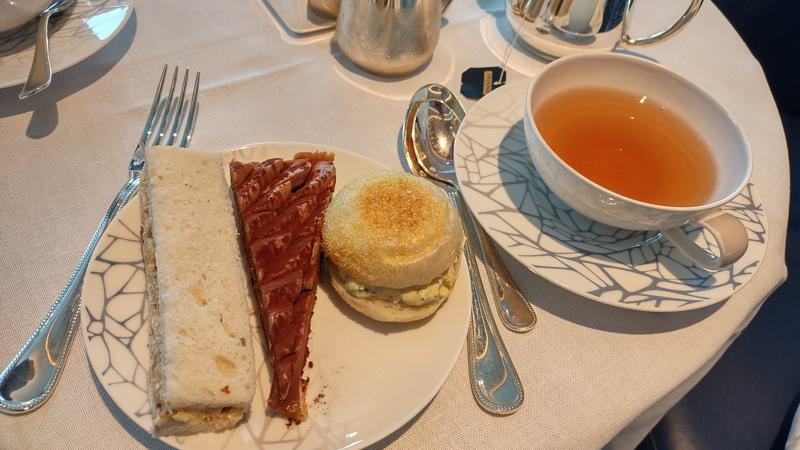
In the afternoon, we teamed up with Randy and his crew for trivia, and our team managed to snag the top score! Becky and I collected 20 O-points for the win.
Later, we attended the Captain’s Cocktail Reception. We were introduced to the Captain as President’s Circle level guest by the Hotel Director when we went through the reception line. Drinks and small bites were served and the string quartet played classical selections. During the presentation the top cruisers were acknowledged. The reception was rather boring and crowded, so we agreed to skip this event on our next cruise.
Dinner was in the main dining room, where we both enjoyed the excellent lobster entree. Afterward, we participated in the evening trivia up in the Horizon’s lounge, teaming up with a retired English teacher. We only managed to get 6 out of 15 questions correct this time.
By the end of the day, we had found about 25 of the 60 items required for the art scavenger hunt.
Art Around the Ship
The art collection on the Allura feels less expansive than those we’ve encountered on other Oceania ships. This collection features approximately 30 artworks from 14 artists. A key component of this experience is the display of QR codes next to the artworks. Guests can scan these codes with their mobile devices to access a custom website. This site offers films that provide in-depth information, exploring each artist’s process, inspirations and philosophies.
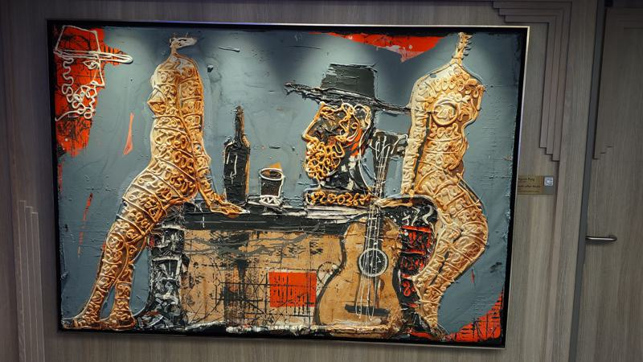
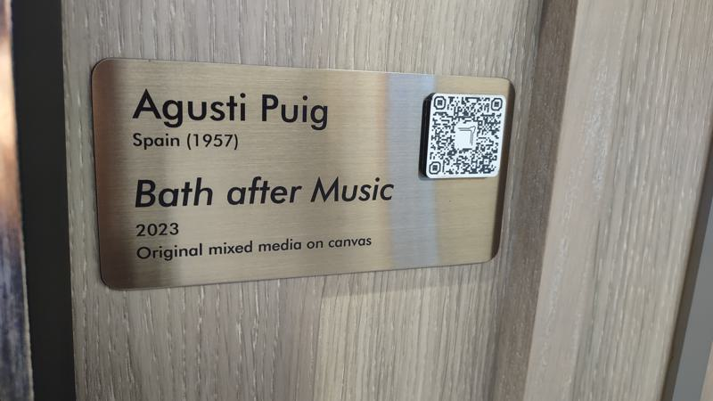
Tue, Nov 18 - At Sea
My day started early at 5am with a shower, followed by coffee and working on my trip report in the Horizon Lounge. The weather continued to be pleasant - sunny, warm, and humid. We were still enjoying very flat seas with hardly any motion, just a minor vibration from the ship’s engines.
We had breakfast in the Grand Dining Room. Becky was a little put out because her meal wasn’t served course-by-course along with mine. Afterwards, we stopped by Baristas for coffee. Becky noticed there was lipstick on her cup and pointed it out to the staff member. Instead of making a new drink, he simply poured the contents into a clean cup. I thought a fresh cup should have been made.
Before lunch, I got a pre-lunch dessert: a crêpe with vanilla ice cream from the crêperie. I had been too full to try one the day before.
We also stopped by the Future Cruise desk to check the pricing for a Panama Canal cruise. It turns out booking a future cruise while onboard can save about 5%.
We had lunch in the Grand Cafe. I ordered a club sandwich while Becky had a shrimp dish. Later, we participated in the 1:15pm ring toss for O-points.
At 4pm, we played the afternoon trivia game with the same team as yesterday. We managed to win again, and we each collected three O-points. One of our teammates is a retired college instructor who seems to know roughly half the answers.
If I get the chance, I’ll ask him what subjects he taught. Between events, we continued our hunt for items on the arts scavenger hunt list.
Dinner was at Tuscana, the ship’s Italian specialty restaurant. We had reserved a table for two, but upon check-in, we were told we had a sharing table. We immediately declined, as sharing tables can sometimes seat only four people, making conversation difficult if no other couples are present or if the couple you get stuck with talks too much or doesn’t say anything. We were given a table for two, though not by the window, which was perfectly fine.
The dinner was excellent. I had the “Pollo Al Forno Al Profumo Di Limone E Crosta Di Parmigiano”. Becky enjoyed the “Aragosta Fra Diavolo Con Tagliolini”, served without the chili peppers.
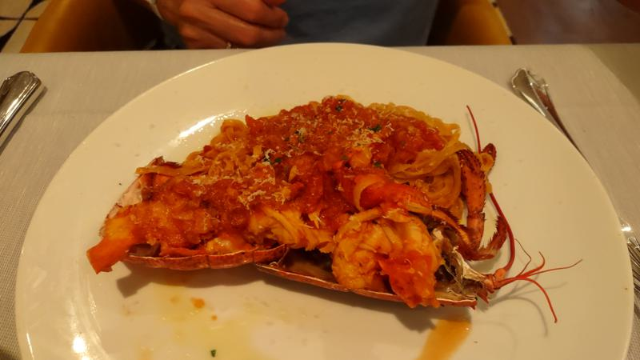
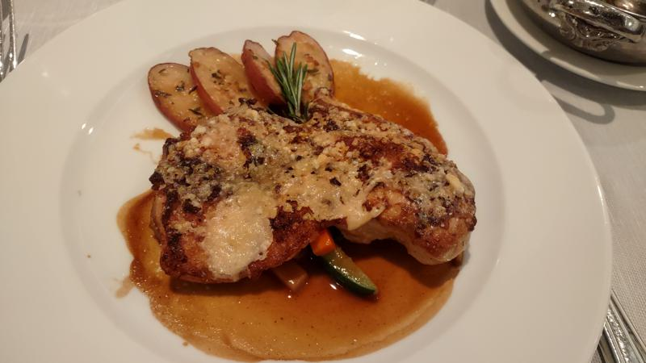
For dessert, we both opted for ice cream. Becky chose mint chocolate chip, while I tried a flavor called “Elvis, the Fat Years” by Humphry Slocombe. I had never heard of the brand before cruising with Oceania. Their ice cream is simply the best - so incredibly rich and creamy. I make it a point to try the daily new flavor whenever possible. Humphry Slocombe is a well-known, high-end ice cream company based in the San Francisco Bay Area, founded in 2008 by Jake Godby and Sean Vahey, famous for unique, adult-focused flavors like Secret Breakfast, and named after characters from Are You Being Served?
When we returned to our room after dinner, we found letters from the shore excursion desk informing us that two of our booked tours were canceled due to lack of participation.
We went to the Horizon’s Lounge for the evening trivia. We joined another couple we had met the previous evening, but we only answered about 8 out of 15 questions correctly, so we didn’t win any O-points this time.
Before going to bed, we reviewed the available tours to find possible replacements. Tomorrow, we’ll visit the Shore Excursion Desk to sort out new bookings.
By the end of the day, we had found 40 of the 60 items for the art scavenger hunt.
Wed, Nov 19 - Oranjestad, Aruba
My day began early. I was up at 5am, and after a quick shower, I headed to the Horizon Lounge for my first cup of coffee. I am usually the first person there, but by 5:30am, a few others began to arrive.
Once again, we enjoyed breakfast in the main dining room. This morning, Becky and I both selected the omelets.
At 8am, the shore excursion desk opened, and we wasted no time getting there. Our priority was to sign up for replacement tours since some of our original bookings had been canceled. In addition to selecting the new tours, we also reserved a transfer from the cruise terminal to the airport on disembarkation day.
With those logistics settled, we went to play mini golf for O-points. I scored zero O-points, having missed every shot, and Becky managed to get one O-point.
We left the ship around 10:15and and walked across the street to the public bus Transportation Center. We bought two round-trip bus tickets for $5 each. From there, we took a fifteen-minute bus ride to our destination - Eagle Beach.
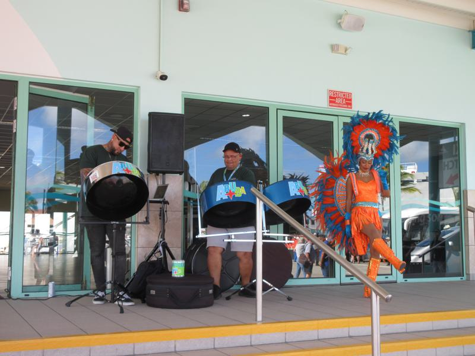
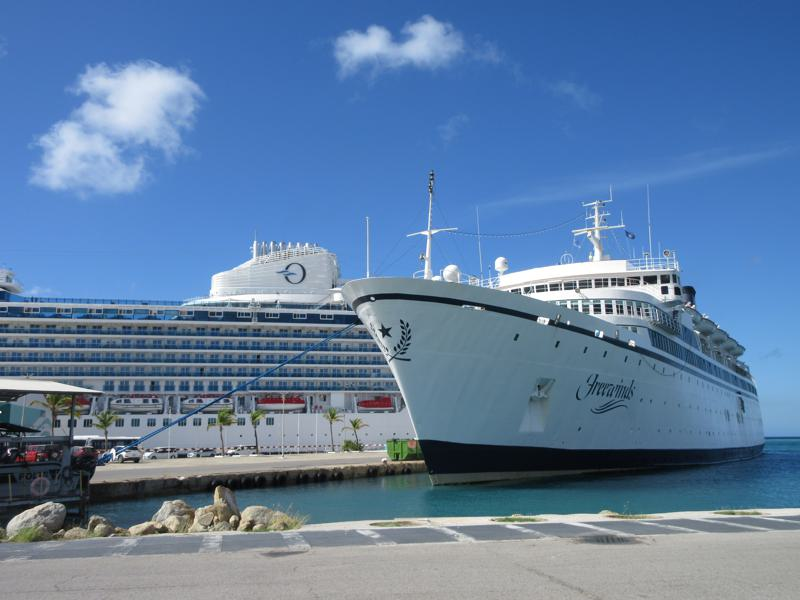

The beach had a fair number of people, but we easily found an open spot and laid out our towels. The weather was warm, about 90 degrees, with a stiff, persistent wind. It was partially sunny with clouds occasionally blowing through. The water was a bit on the cool side, comparable to a swimming pool, but pleasant enough. We enjoyed the sun and sand for about an hour and fifteen minutes before deciding to head back.
We walked a short distance back to the main road and asked two policemen on bikes for directions to the nearest bus stop. On our way, we spotted two city buses heading in the direction we wanted, which was discouraging. When we finally reached the bus stop, we had a 35-minute wait before our bus arrived, instead of the advertised 15 minute wait.
Back on board the ship, we went to the main pool for a swim. Afterward, Becky went back to the room to shower while I went to the spa. I relaxed in the thermal spa for a while, followed by about fifteen minutes in the steam room. I made good use of the spa’s shower facilities before leaving.
At 3pm, we attended afternoon tea. Since we had skipped lunch, we especially appreciated having two of the small finger sandwiches.
Our evening started with pre-dinner cocktails at the Founders Bar. We have been making a point of trying the bar’s list of unique specialty drinks.
Dinner tonight was at Jacques, the French specialty restaurant. Becky ordered the “Carré D’agneau Rôti Aux Herbes, Ratatouille, Gratin Dauphinois” - herb-roasted lamb rack, ratatouille, potato gratin. I had the Dover sole, which was excellent and I would get it again on a future cruise. Dover sole is also served in Toscana, the Italian restaurant, but it’s much better here in the French restaurant and it’s served with the lemon-caper butter sauce.
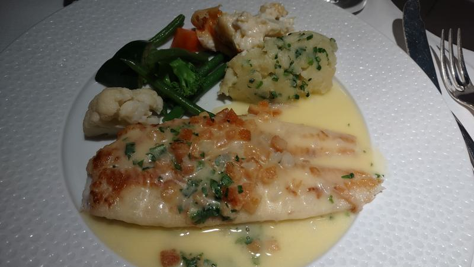
Thur, Nov 20 - Willemstad, Curaçao
The weather today was typically Caribbean - mostly sunny, warm and humid.
Our breakfast was delivered to the room at 7:30am and our shore excursion meeting was scheduled for 8:30am in the theater. By the time we arrived, our tour group had already been called. We quickly headed outside to catch up with the rest of the tour.
Today’s tour was called Sea & See Island Discovery.
The first part of the tour introduced us to the underwater world via the Seaworld Explorer. This semi-submarine remains above sea level, and the passengers sit comfortably in a viewing hull submerged five feet below the surface. The undersea views were better than expected. We were treated to a spectacle of colorful reef fish, like yellowtail snapper, parrotfish, and sergeant majors, attracted right up to the windows by an accompanying diver armed with their favorite food.
After returning to dry land, we reboarded the coach for a scenic drive. We crossed the Queen Juliana Bridge, which arches 185 feet over St. Anna Bay, offering incredible panoramic views of the city and harbor.
Our final destination was the Chobolobo distillery, housed in a Dutch colonial country estate. Here, we took a guided tour and sampled the famous Curaçao liqueur, which is made from the peel of bitter oranges brought to the island centuries ago. I purchased a bottle of authentic Blue Curaçao as a souvenir.
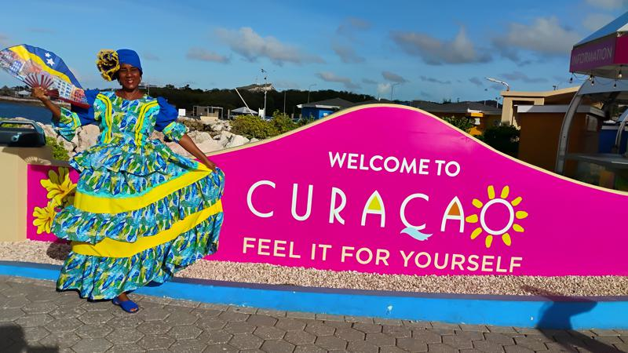
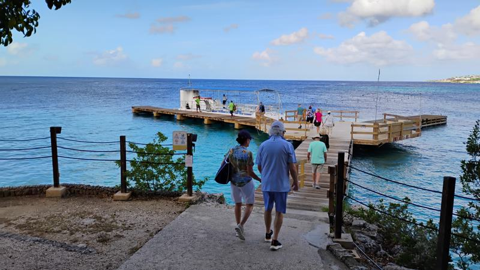
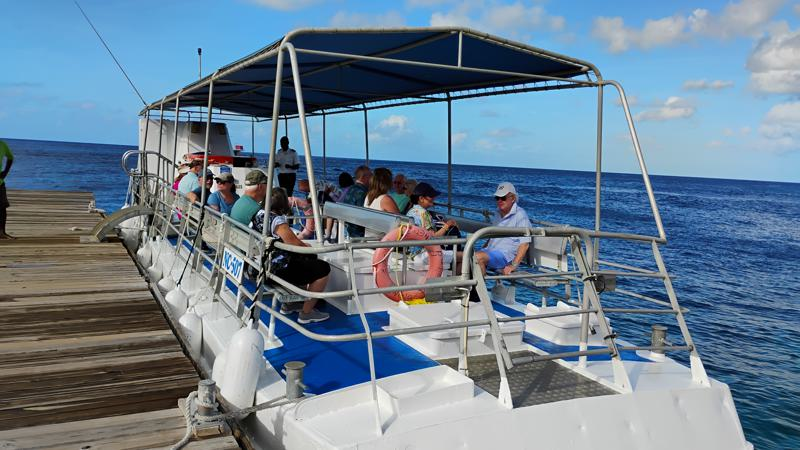
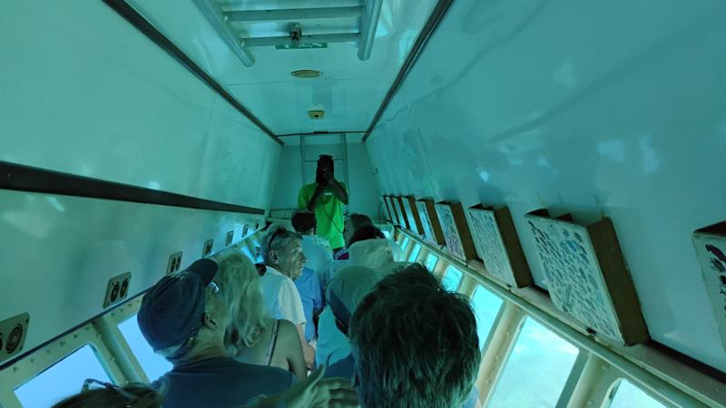
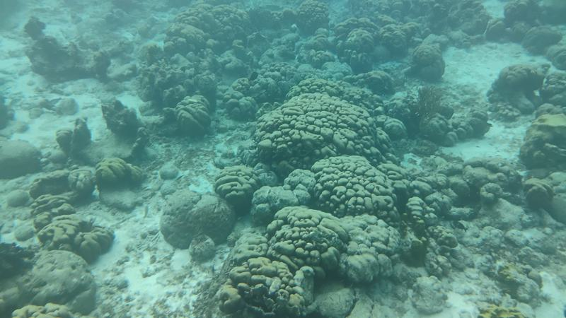
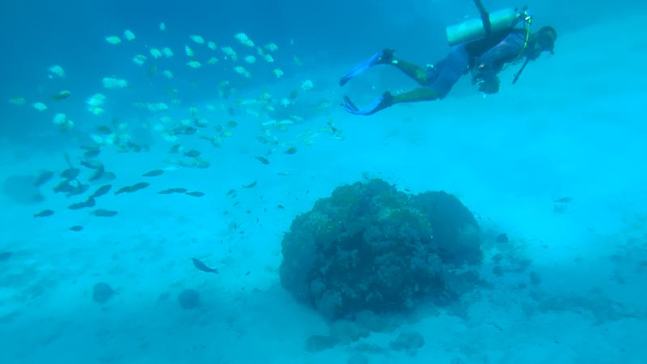
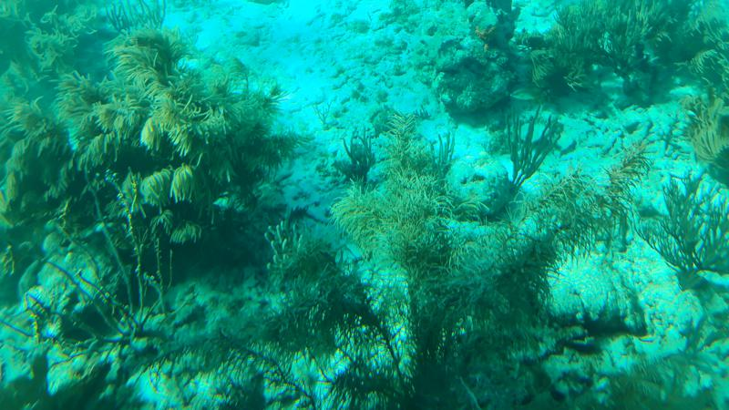
The semi-submersible sub was a neat experience. It was something that Becky always wanted to do and it was much better than I expected.
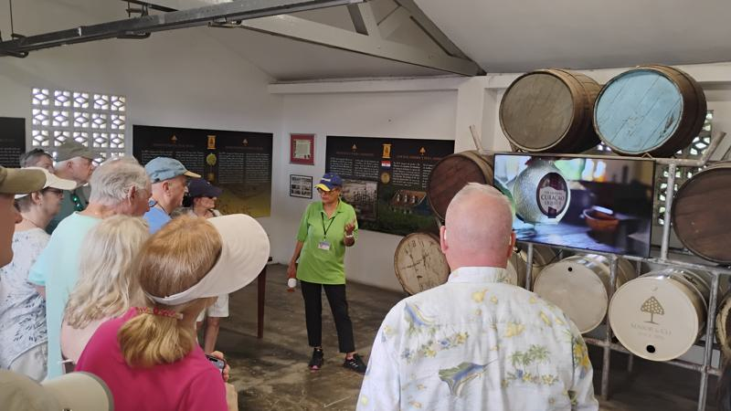
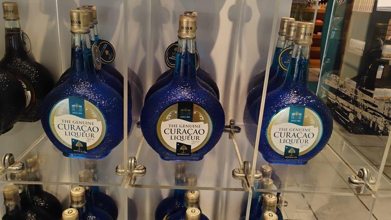
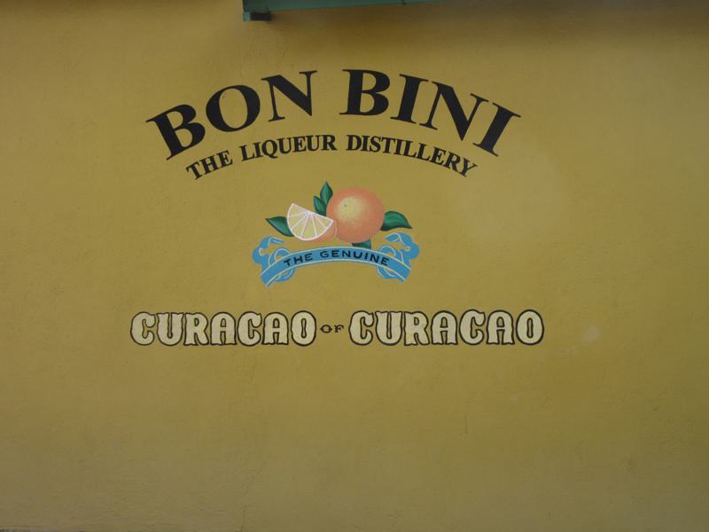
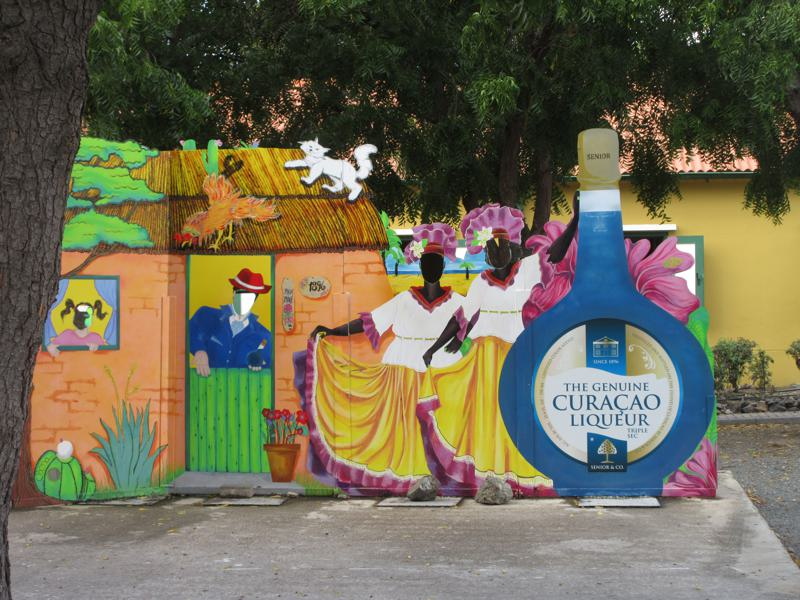
Unfortunately, Becky was coming down with a cold, so she headed back to the cabin to take a nap after the excursion.
I went to grab lunch and then set out to explore the area near the port on my own. Since I wasn’t interested in shopping, I was able to see the main sights fairly quickly.
Back on board in the afternoon, I spent some time working on the art scavenger hunt. I have 8 items to find. We also tried our luck at the afternoon trivia, but our team’s score of 14 wasn’t enough to earn us any O-points.
Dinner tonight was pizza. In the evening, Waves Grill turns into a pizzeria. We ordered one pizza to share. Half the pizza came with the toppings Becky wanted and the other half came with the ones I wanted. The pizza was good and we plan to eat there on future cruises.
Fri, Nov 21 - Kralendijk, Bonaire
Our port of call was Kralendijk, the capital of Bonaire, which forms the “B” of the ABC islands (Aruba, Bonaire, and Curaçao). This special municipality of the Netherlands lies about 80 km (50 miles) off the coast of Venezuela.
After settling in, I started the day with coffee at the Horizon Lounge, while working on the blog. Breakfast was a satisfying omelet from the buffet before getting ready for the morning’s activities.
Unfortunately, Becky wasn’t feeling well and decided to skip the planned excursion.
I proceeded to the theater for the meeting point of the Eco-Powered Tuk-Tuk City Tour. This open-air ride provided a fantastic orientation to Kralendijk. Our friendly driver/guide offered lively commentary as we zipped around in the electric mini-taxi. We saw several key sights, including Fort Orange with its historic cannons, Bonaire’s largest church, and the delightful, widespread Dutch architecture. It was a brisk, open-air welcome to the city whose Dutch name, Kralendijk, means “coral dike.”
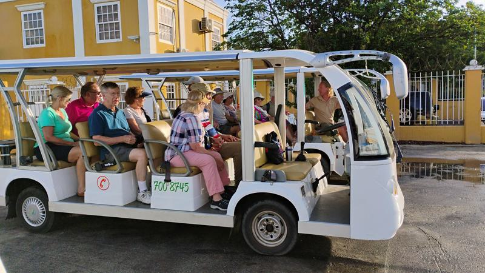
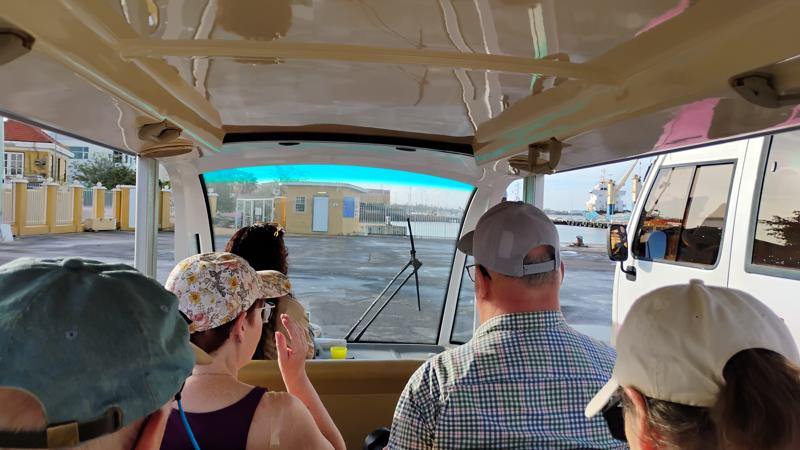
After the Tuk-Tuk tour ended, I embarked on my own DIY walking tour, hitting several landmarks: Fort Oranje (1639), with its cannons; Plaza Wilhelmina (Wilhelmina Park); Protestante Kerk van Kralendijk (Bonaire’s largest church); The Tourism Office; the Lions Club Monument Time Capsule.
I also browsed the local shops on Kayla Gransi Street, stopping by the High Spirit Cuban Cigar & Liquor store and the local Salt Shop.
Back onboard, lunch was a relaxing affair at the Terrace Cafe. For an afternoon treat, we headed up to the Crêperie: I ordered in a Crêpes Suzette, which I didn’t care for, while Becky enjoyed an ice cream in a waffle cone. We finished with coffee at Baristas, a cappuccino for me and a latte for Becky. Later we received a few tips on locating some missing art pieces we were hunting for.
At 1:30pm, we attended a complimentary wine tasting for President’s Circle members, normally priced at $75 plus gratuity. The theme was “Pinot, the heartbreak grape,” which was perfect, as Pinot Noir is my favorite red wine.
The tasting explored this delicate, thin-skinned variety known for producing elegant and complex wines. The grape is called “the heartbreak grape” and yields light to medium-bodied wines with classic bright red fruit (cherry, raspberry) and earthy notes. We sampled five different Pinot Noirs, each paired with a small bite. The wines came from Italy ($65), France ($165), Oregon ($155), New Zealand ($110) and California ($140). The prices in parentheses are the prices per bottle if you purchase a bottle on the ship.
The moniker “Heartbreak Grape” stems from Pinot Noir’s extraordinary difficulty to cultivate and vinify. This thin-skinned variety is highly susceptible to rot, disease, and weather extremes, demanding a very specific, cool-climate environment to thrive.
The most famous and highly regarded Pinot Noir growing regions are in Burgundy, France, where the grape reaches its pinnacle of elegance and complexity, particularly in the Côte d’Or region. Other world-class, cool-climate regions where Pinot Noir thrives include the Willamette Valley in Oregon, which shares a similar latitude and climate to Burgundy and excels at producing Old World-style wines. In California, the Sonoma Coast and Russian River Valley are key areas that produce richer, fruit-forward expressions. Pinot Noir is also successfully grown in the Central Otago region of New Zealand. These regions all offer the crucial combination of warm days for ripening and cold nights to retain the grape’s delicate acidity, which is essential for balance and aging potential.
We also tasted a Pinot Grigio from Italy, which was surprisingly light amber in color. While I enjoyed the Pinots, which ranged in price on the ship from $65 to $165 per bottle, I honestly felt they didn’t taste significantly better than the $6 to $10 priced bottles I usually buy back home.
In the evening, we played trivia but didn’t manage to score any O-points.
Dinner was a lovely experience at Polo Grill. I opted for the classic Filet Mignon, while Becky enjoyed a surf-and-turf combination of lobster tail and filet mignon.
Sat, Nov 22 - St. George’s, Grenada
Our cruise brought us to Grenada, the “Island of Spice”, for our first visit. The weather was partly cloudy with a temperature of 90°F. Grenada is a vibrant gem known for its lush, mountainous interior and its capital, St. George’s, a picturesque harbor town.
We began the day with breakfast in the grand dining room. I had “Huevos”, while Becky enjoyed an omelet and lamb chops.
The morning’s main event was Bathrobe Trivia. Our team was motivated by the bonus: anyone wearing a bathrobe received two extra O-points. With most of us wearing our robes, we went on to achieve a remarkable perfect score of 15 out of 15, leaving the next highest team far behind with only 10 O-points. We definitely caught some suspicious looks, but we were just that good! Between activities, we continued our search for scavenger hunt art around the ship.
After a quick lunch of a club sandwich for me and pasta for Becky in the grand dining room, we prepared for our afternoon excursion, “The Spice of Our Lives.” We checked in at the theater around 1pm and had a short 15-minute wait before our group of about 15 was called. As we drove, the island immediately showed its character: very hilly with narrow, winding roads.
The half-day tour focused on Grenada’s famed spice and rum production, featuring three distinct stops:
- De La Grenade Industries: This family-owned company specializes in value-added nutmeg products. We learned how they utilize the nutmeg fruit to create items like Nutmeg Jam, Morne Délice Syrup, hot sauces and their signature La Grenade Liqueur. We toured the adjacent Nutmeg Garden and sampled their unique specialties.
- Laura Herb & Spice Garden: This was my favorite stop. The garden, located in Epping Forest, provides a highly interactive and sensory experience. Visitors walk trails paved with nutmeg shells, where guides encourage you to touch, smell and taste fresh spices like cinnamon, cloves, bay leaves, turmeric, ginger, allspice, nutmeg and cocoa straight from the plant.
- Clarke’s Court Distillery: Our final stop showcased the production of Grenada’s most famous rum. We toured the historic factory, observing the vintage machinery used to process sugar cane molasses. The tour concluded with a popular tasting session, allowing us to sample their diverse, award-winning rums, from strong white rums to aged and spiced varieties.
The tour concluded around 5:30pm. While I thoroughly enjoyed the tour, especially the hands-on experience at the spice garden, Becky rated the overall excursion as just average. After being dropped off, we walked around the town of St. George’s briefly, but found that most shops were already closing up around 5pm. We should have applied mosquito repellent to our arms and legs before the tour. We each got about 15 bug bits which started to itch the following day.
For dinner, we opted for a relaxing evening and chose to dine in our room with selections from Jacques. Our entrées were delivered around 6:45pm. For our main courses, I chose “Homard Thermidor”and Becky enjoyed “Gambas À L’armoricaine”.
Dinner was good and it was nice not to have to get changed for dinner after our tour.
Sun, Nov 23 - Castries, St. Lucia
I was showered, dressed and by 6:30am sitting in Horizon Lounge. I settled in with a cup of coffee and finished working on my blog about yesterday’s activities. Both Becky and I are still getting over colds, so we started the day with some over-the-counter daytime cold and flu medicine.
Today, our ship is docked in Castries, St. Lucia. This vibrant capital and largest city is Saint Lucia’s primary political, commercial, and economic center. It’s situated on the northwest coast, built around a deep, naturally protected harbor that is a major port for cruise ships.
After Becky was ready, we went up to Baristas for her morning coffee. I enjoyed a Cappuccino with a Pain au Chocolat. Looking out at the harbor, we noted the two other ships in port with us: the Holland Komsingdam and the P&O Britannia.
We then had breakfast in the Grand Dining Room. We both ordered omelets, and Becky also enjoyed lamb chops.
The rest of the morning was spent relaxing at the Aquamare Spa. I spent time reading my Kindle in the shade. I also spent 15 minutes relaxing in the Steam room.
We had a quick lunch back in the Grand Dining Room. At 4pm we attended trivia. We got 2nd place.
Later in the afternoon, we attended the exclusive Oceania Club Members party, where drinks and small bites were served. The top Oceania cruisers were introduced. One of the top cruisers were Randy and Denise, our trivia partners, with over 1500 cruise nights.
For dinner, we dined at Toscana. I had the sea bass, while Becky went for the “Aragosta Fra Diavolo Con Tagliolini”, a dish featuring Maine lobster, tagliolini, garlic, chili peppers, Italian parsley, and tomato sauce. This is the second time on this cruise that she has ordered this dish.
The evening continued with a round of trivia at 8:15pm. Then, at 9:30pm, we went to the show, which was called “Broadway.” It was described as a documentary and concert, offering a backstage look at the history of Broadway. This multimedia performance celebrated the elements that bring a show to life - music, dance, costumes, choreography and the creative process.
We ended up leaving the show early. Becky thought the multimedia elements were interesting, but we both wished they had performed more popular Broadway hits. We left around the same time as an elderly couple in our row who also decided to depart.
Mon, Nov 24 - Gustavia, St. Barts
Today, we visited the island of Saint Barthélemy (St. Barts), arriving bright and early as the ship reached its anchor station by 7am. St. Barts is a tender port. This morning we enjoyed breakfast in the Grand Dining Rroom.
After gathering our belongings, we headed to the theater around 9am to pick up our tender tickets. Our group was called shortly after, at around 9:15am, and the tender ride across the harbor to Gustavia took about 20 minutes. The sight upon arrival was stunning: about ten superyachts were moored in the harbor, emphasizing why the island is known as the “Billionaires’ Playground.” St. Barts, a French overseas collectivity, is truly a jewel renowned for its chic, high-end atmosphere, pristine beaches and picturesque hillsides.
Once ashore, we began a self-guided walking tour of the capital, Gustavia, which blends French elegance with tropical relaxation. We visited several historic and scenic spots. First up was the Anglican Episcopal Church (St. Bartholomew’s Anglican Church), built in 1855, is a key example of beautiful local colonial style, offering a cool, serene respite from the Caribbean sun within its shaded interior.
Nearby, the simple but distinctive Swedish Clock Tower stands as a key reminder of St. Barts’ nearly century-long rule by Sweden (1784–1878), providing a visual link to this unique period in the island’s history.
Constructed around 1800, the Swedish Clock Tower was originally the bell tower of a Lutheran church that was later destroyed by a cyclone, leaving the intact tower as the sole remaining structure. This monument, built from volcanic stone and topped with distinctive light-green wooden cladding, features a bell named “Sofia Magdalena,” which was cast in Stockholm in 1799. Today, the Swedish Clock Tower serves as a popular visitor site, representing a preserved piece of the island’s architectural heritage and its enduring historical connection to Sweden.
These historic structures are complemented by the Church of Our Lady of the Assumption, the island’s primary Roman Catholic church.
From there we continued our walk to Shell Beach (Anse des Coquillages) which offers a unique coastal experience, distinct from the island’s famous powdered-sand shores, as the beach is composed almost entirely of millions of tiny, smooth white shells.
Our last stop was Fort Karl (Fort Gustav), one of the historic military defenses of the harbor. Although now mostly ruins, the hill where the fort is located is a must-visit for the spectacular panoramic views it provides, allowing visitors to look down upon the iconic Gustavia harbor, the yachts, the red-roofed town and the vast Caribbean Sea.

We finished our walk around 11am and headed back to the tender dock. Becky went back to the ship alone, as I planned to stay on the island a little longer before my scheduled excursion.
Using the extra time, I walked up to the Gustavia Lighthouse, which offered spectacular panoramic views of the island, the bustling harbor, and the neighboring islands of Nevis and St. Kitts. I then walked back to the shaded, breezy garden of the Anglican Church to wait for my 1:25pm tour meeting time. I’m also feeling relieved that my cold is much better today.
The excursion started with a ten minute walk from the tender area to the Lounge Barons de Rothschild, a sophisticated wine boutique and gourmet lounge in Gustavia. This chic establishment is a haven for connoisseurs, offering fine wines and Champagnes directly sourced from the illustrious Rothschild family châteaux. We enjoyed a delightful tasting of two Champagnes and two red wines, all of which were excellent, accompanied by a plate of superb French cheeses and a basket of bread.
There were six of us on this excursion. Two couples, a solo lady and me. The people on the tour were pleasant, the conversation was nice, and it made for an enjoyable and refined experience.
Below are the two champagnes and two red wines we tasted. The first champagne was made from chardonnay grapes and was very, very nice. It was semi-dry and had a wonderful taste. It reminded me of Veuve Clicquot Yellow Label, but perhaps a bit better. Everyone in our group agreed that this champagne was excellent.
The next champagne was a rose, which I didn’t like as much. It tasted rather ordinary. The next two samples were red wines and these were good and paired well with the bread and cheese. The cheese was outstanding and perhaps the highlight of the tasting. I’m not a fan of brie, but apparently, I’ve never tasted good brie. This brie was smooth and creamy, like soft butter, and it kind of reminded me of the taste of butter. It was wonderful.
After the wine tasting, I headed back to the harbor and took the tender back to the ship. I met up with Becky, who was queued up for the afternoon beanbag toss competition. Later, at the 4:30pm trivia, we joined our team and happily won first place.
Later we enjoyed pre-dinner drinks in the Martini Lounge before having dinner in the Grand Dining Room with two of our trivia partners, John and Carrie. The fun continued after dinner with the evening trivia in the Horizon Lounge, where we secured third place with a different team. By 8:30pm, we decided to skip the comedy show and called it a night.
Tue, Nov 25 - Tortola, British Virgin Islands
Today marks our last port of call in Tortola, British Virgin Islands, where we are docked alongside the ultra-luxury Crystal cruise ship. With no excursions planned, we decided on a tranquil day entirely spent onboard.
The weather is mostly cloudy with occasional rain showers, and the high temperature is 84F.
We started the day with breakfast in the Grand Dining Room. Becky enjoyed an omelet accompanied by lamb chops, while I also opted for an omelet.
Following breakfast, we spent a couple of hours at the exclusive Spa Terrace. Access to this deck is restricted to guests in concierge cabins and above, making it a delightfully uncrowded and peaceful area.
I spent most of my time reading my Kindle in the shade, occasionally taking a dip in the Thalassotherapy Pool. This therapeutic pool is filled with warmed seawater and features underwater jets for hydromassage.
A quick note on the Spa Terrace: Unlike the loungers on other Oceania ships, the shaded area here only has six heated beds, which aren’t quite as comfortable. Nevertheless, I managed to squeeze in a short nap.
Later, I decided to experience the saunas. Before entering, I tried the unique “Experience Shower”, a multisensory feature that combines colored lighting with varying water temperatures and effects (cool overhead, warm massaging jets from the sides). While I found it a bit of a gimmick, I’m glad I gave it a try. I then spent about 10 minutes in the dry sauna before moving on to the stream sauna, which I enjoyed more.
After a casual lunch at the Terrace Cafe, we returned to our cabin to finish a movie we had started a few days prior.
At 3pm, I headed back to the spa for my haircut appointment. The cost was covered by our spa credits, with only the mandatory 20% service charge (aka the tip) being paid out of our onboard credit.
Our afternoon trivia session at 4:30pm was a success, we took home second place.
We kicked off the evening with pre-dinner drinks at the Founders Bar.
Dinner tonight was at Red Ginger, the specialty Asian fusion restaurant.
Our appetizers were spring rolls and prawns.
For our first course, we ordered the “To Share” platter, featuring skewers (chicken, beef, shrimp), the chef’s selection of sushi, and tempura (rock prawn, calamari).
Becky chose the Seven Spice-Crusted Lamb Rack (served with wasabi-lamb jus, shiitake mushrooms, and snow peas) for her main course. I had Thai Red Curry Chicken (with eggplant, baby corn, lime leaves, and basil).

Overall, dinner at Red Ginger was good. The food was very tasty. On a previous cruise we were not impressed with Red Ginger. This time, I ordered something different and Becky repeated the lamb chops. Although I would rank Red Ginger at the bottom of all the restaurants on Allura, the food tonight was very good. The only negative aspects were - it was very noisy and the room temperature was on the warm side.
To cap off the night, we participated in evening trivia and won first place, scoring those coveted O-points.
Wed, Nov 26 - At Sea
Today marks the first of two sea days on our return voyage to Miami. The weather is beautiful, with mostly sunny skies and highs in the upper 80s. The sailing conditions have been exceptionally calm throughout this trip; we hardly feel like we’re at sea, even out in the Atlantic.
Our day began with breakfast in the Grand Dining Room. Becky enjoyed a western omelet with sausage, while I ordered avocado toast with poached eggs. Unfortunately, I had to send my eggs back as they weren’t cooked as ordered, a minor but rare stumble, as this was the first food issue I’ve had all trip.
The morning was spent participating in scheduled events to earn O-points. These events typically start about an hour after breakfast and are spaced roughly an hour apart. While waiting in line, we’ve had the pleasure of meeting some genuinely nice people whom we continue to run into throughout the day. In fact, we ended up having afternoon tea with one of the couples we met this morning.
For lunch, we returned to the Grand Dining Room. Becky had the braised cod, which she declared excellent, though the accompanying salmon roe (which we both tasted) was notably salty. I ordered a Croque Monsieur, the classic French baked sandwich of ham and cheese topped with Mornay sauce; and it was truly delicious. After lunch, we dedicated some time to a few more events to earn additional O-points.
After lunch we decided to get dessert at the Crêperie, which is located conveniently adjacent to Baristas, the coffee bar, and just around the corner from The Bakery.
At 3pm, we attended the formal afternoon tea, sharing a table with the couple we had met earlier. Later, around 4:30pm, we participated in afternoon trivia. Our team performed well enough to secure third place, and both Becky and I finally contributed correct answers! Becky knew that Dark and Stormy was the drink made from a list of ingredients which was the clue; and I knew that SSD stands for Solid State Drive. We were both thrilled to pitch in.
Dinner was once again with John and Carrie. Becky had the lobster, and I enjoyed the Beef Wellington. The food tonight was exceptional. The evening concluded with a music trivia event. Our team included some members from the afternoon session, plus four new players, bringing us to a total of eight. Together, we managed to achieve a perfect score!
We headed to the main theater at 9pm to secure our favorite seats for the 9:30pm show; back row, on an aisle, in case we wanted an easy exit. As it turned out, we left about fifteen minutes into the performance since the music wasn’t to our taste.
Thru, Nov 27 - At Sea
Our day began with breakfast in the grand dining room. Becky enjoyed her usual omelet and lamb chops, while I opted for avocado toast with poached eggs.
After we ate, we played a quick round of indoor golf, scoring additional O-points.
We reviewed our statement and were surprised to find an extra $200 in non-refundable onboard credit. I went to the front desk for a printout and an explanation, discovering that we had received a 25% discount based on the number of shore excursions we booked. With this bonus, we visited the gift shop and stocked up on extras like lip balm, a men’s swimsuit and sunscreen.
Becky had started her packing yesterday, and I tackled my packing this morning. We paused our efforts for the 2pm Trivia competition, where our team secured first place. This was immediately followed by the Art Scavenger Hunt answer review. Because we got all 60 answers correct, we earned 20 O-points.
The O-point redemption was next. I chose a long-sleeve cotton shirt for 70 O-points, and Becky got a shirt, hat, and some socks. We still have O-points left over, which we’ll save for our next Ocean cruise. After that, it was back to the room to continue packing.
For dinner, we ate in the main dining room, and both of us selected the traditional turkey dinner entrée. We returned to the room one last time to finish our packing for the evening.
Fri, Nov 28 - Disembarkation, Miami
We started the day an hour earlier than usual. After a quick shower and final packing, I grabbed a coffee at the Horizons Lounge. By 5:30am, the ship was slowly moving into the port of Miami and making its way to the cruise terminal.
The weather in Miami was overcast and about 70F, which felt noticeably cooler than what we had been used to over the last week and a half.
Before breakfast, I used the bathroom scale to weigh our suitcases. Becky’s was 48 pounds and mine was 52.8 pounds. We quickly juggled some items to equalize the weight. Ironically, we later learned at the airport that our weight limit for this flight was 70 pounds per bag, not the usual 50 pounds for domestic flights.
We went to the Grand Dining Room for breakfast at 6:50am. There was already a line, but we were seated quickly, and breakfast only took about 30 minutes. Back in the cabin, we did our final room check and packing, leaving the cabin promptly at 8am, the required time to vacate the room for all passengers.
We headed to the ship’s atrium to wait for our designated group to be called. While waiting, we chatted with two of our trivia partners, who were heading to Detroit. The atrium was packed with people ready to disembark and the hallways were crowded.
Becky pointed out that next time, we should wait in the atrium on Deck 5. The gangway was on Deck 6, so Deck 5 had many more empty seats.
Eventually, Becky got tired of waiting, and since the line had cleared, we simply got up and walked off. Once inside the terminal, there was a line of about 100 people. By 9:30am, we were in line waiting for immigration, which moved quickly. We were out of the terminal and looking for our driver by 9:45am. We had reserved a private car using some of our non-refundable onboard credit, and despite some traffic, we arrived at the airport in about 20 minutes.
Check-in at the American Airlines counter was quick. The walk to TSA PreCheck was long, but we passed through security quickly. For some reason, TSA PreCheck and CLEAR are only available at a few checkpoints at the Miami airport.
We then walked to the American Airlines Flagship Lounge, arriving at 10:45am. We had a brief issue checking in because the scanner couldn’t read our tickets, but we were eventually granted access after new tickets were printed.
About a month ago, American Airlines changed our return flight’s plane from a 737 to a 777. This meant our First Class tickets were automatically upgraded to Flagship Class, giving us access to the lounge’s food, beverages, and quiet sanctuary. We were happy for the upgrade, even though it meant departing 30 minutes later.

Around 11am, the lounge switched from serving breakfast to lunch; we enjoyed the chicken and vegetables. While sitting in the quiet section, one guest started a very loud phone conversation. Another person complained to a staff member, who moved the complaining guest to a different area. I used Google Translate on my phone to listen and translate the loud conversation, which sounded like Russian. It was nothing exciting, just comments about being in the lounge and traveling alone.
We left the Flagship lounge about 15 minutes before boarding time, not realizing how long the walk was, which also required a tram ride. We arrived at our gate just in time for boarding and ran into Randy and Denise, our trivia partners, who were on the same flight. We had seen them from a distance earlier at the cruise terminal with an escort to the front of the line. Randy explained that the escort cost them $89 because they had to pay duty on some gift shop purchases.
The flight home was mostly smooth, though the cabin was quite warm. I tried to get some sleep but couldn’t. Knowing that I had an hour-long drive ahead of me after landing, I couldn’t force myself to fall asleep. I should have listened to one of my audio books, because they usually put me to sleep.
Our plane arrived at the Tom Bradley Terminal at LAX. We had a long walk to the American Airlines terminal (Terminal 4) to retrieve our baggage. After getting our bags, we went outside to wait for the FlyAway bus. The first bus passed without stopping, but about 30 minutes later, an overflow bus picked us up. We finally arrived home at 12:30am.